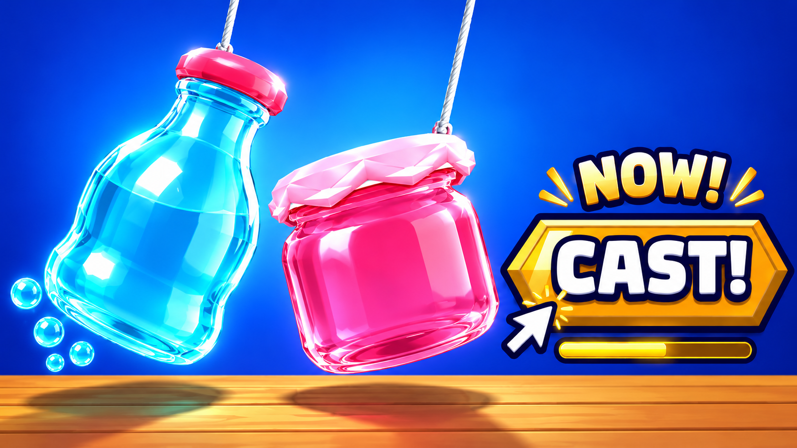
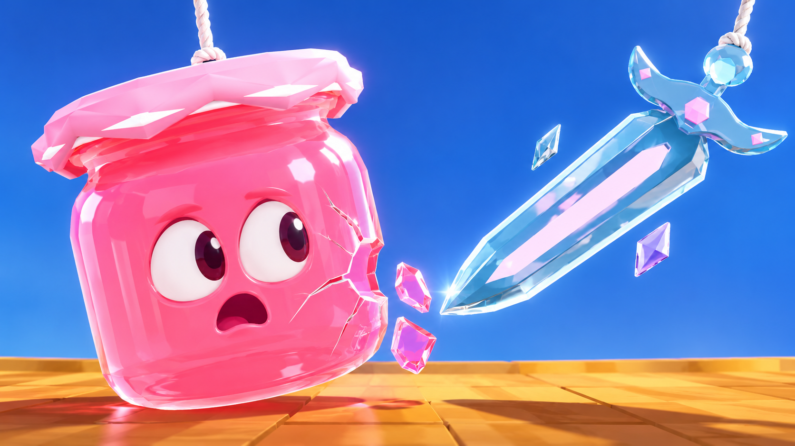
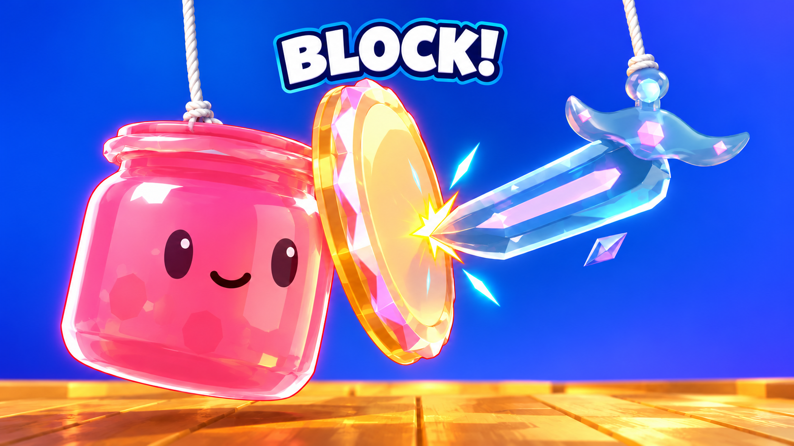
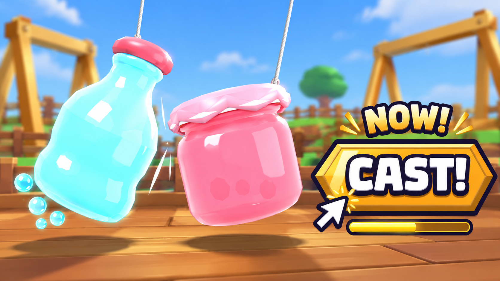

23 October 2026 · Stronger subject contrast, recognizable fragile glass and a real defensive ability.




Early sample only: all rows Learning, 0.04 ad credits each. Plays are outside the supplied crop. Compare actual acquisition and engagement alongside CTR. Faces in 2 and 3 are marketing expressions; original asset silhouettes and real mechanics are retained. Exact early results and limits.
Notes and suggested order · Exact generation prompts and source files · File checks